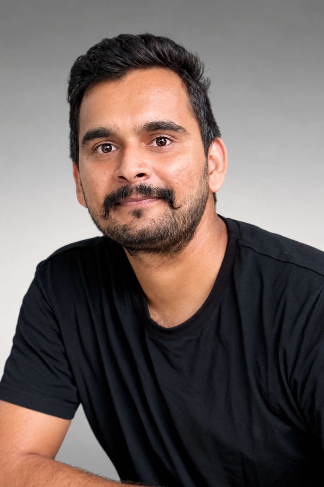

Intelligent Metasurfaces
Reconfigurable intelligent surfaces (RIS), active RIS, holographic RIS (HRIS), stacked intelligent metasurfaces (SIM), and beyond-diagonal RIS.

ACADEMIC PROFILE
Ph.D. Researcher
Institute of Communications Engineering | National Sun Yat-sen University, Kaohsiung, Taiwan
Wireless Communications and Signal Processing
Mathematical Optimization for 6G and Beyond
ABOUT ME
I am currently pursuing a Ph.D. at the Institute of Communications Engineering, National Sun Yat-sen University (NSYSU), Kaohsiung, Taiwan, since 2025. I received my M.Tech. degree through the International Master's Program in Telecommunication Engineering at NSYSU in 2025 and my B.Tech. degree in Electronics and Telecommunication Engineering from Truba Institute of Engineering & Information Technology, affiliated with Rajiv Gandhi Proudyogiki Vishwavidyalaya (RGPV), Bhopal, India, in 2022.
My master's thesis was entitled Robust Secure Active RIS-aided Communication Systems. My research focuses on wireless communications, signal processing, and mathematical optimization, with particular emphasis on reconfigurable intelligent surfaces, near-field communications, multiple access techniques, integrated sensing and communications, and physical layer security. I am interested in developing robust and energy-efficient resource allocation and beamforming techniques for next-generation wireless networks.
I also serve as a reviewer for several IEEE journals, including IEEE Transactions on Wireless Communications, IEEE Transactions on Communications, and IEEE Internet of Things Journal.
RESEARCH DIRECTIONS
Reconfigurable intelligent surfaces (RIS), active RIS, holographic RIS (HRIS), stacked intelligent metasurfaces (SIM), and beyond-diagonal RIS.
Near-field and fully piecewise near-field communications, holographic antenna systems, and pinching antenna systems (PASS).
Non-orthogonal multiple access (NOMA), rate-splitting multiple access (RSMA), uplink and downlink communications, full-duplex communications, Internet of Things (IoT), and short-packet communications.
RIS- and SIM-assisted integrated sensing and communications (ISAC), sensing beampattern design, and joint sensing and communication optimization.
Secrecy rate maximization, secure wireless transmission, imperfect channel state information (CSI), and channel uncertainty modeling.
Beamforming design, power allocation, antenna position optimization, sum-rate maximization, energy efficiency maximization, and transmit power minimization.
UPDATES
June 2026: Received the Award of Excellent Ph.D. Student in Research.
April 2026: Received a Student Travel Grant Award and an NSTC Grant for attending IEEE WCNC 2026 in Kuala Lumpur, Malaysia.
RESEARCH OUTPUT
ACADEMIC BACKGROUND
Institute of Communications Engineering, National Sun Yat-sen University, Kaohsiung, Taiwan
2025 – PresentInternational Master's Program in Telecommunication Engineering, National Sun Yat-sen University, Kaohsiung, Taiwan
2023 – 2025Truba Institute of Engineering & Information Technology, RGPV, Bhopal, India
2019 – 2022Sahodra Roy Government Polytechnic College, Sagar, RGPV, Bhopal, India
2016 – 2019PROFESSIONAL ACTIVITIES
Northern Coal Fields Limited, Singrauli, India — January–February 2019. Designed a high-power stereo audio amplifier with customized audio panning and individual volume control.
GET IN TOUCH
Institute of Communications Engineering
National Sun Yat-sen University, Kaohsiung, Taiwan